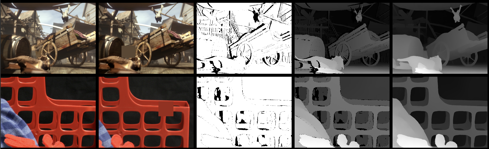
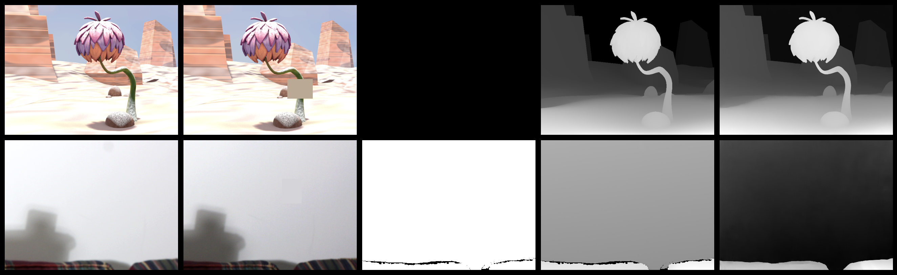
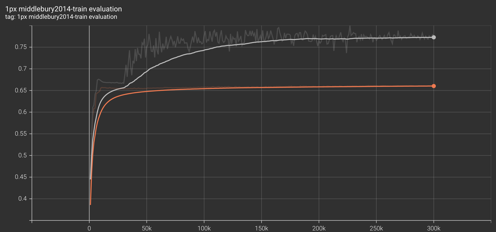
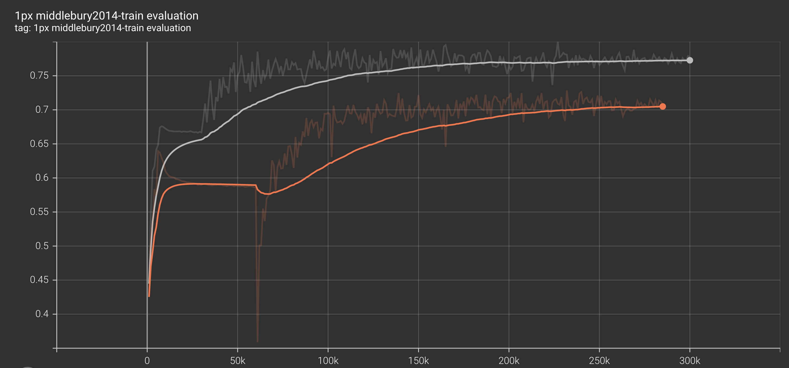

Stereo Matching reference training scripts
Contents
Stereo Matching reference training scripts¶
This folder contains reference training scripts for Stereo Matching. They serve as a log of how to train specific models, so as to provide baseline training and evaluation scripts to quickly bootstrap research.
CREStereo¶
The CREStereo model was trained on a dataset mixture between CREStereo, ETH3D and the additional split from Middlebury2014. A ratio of 88-6-6 was used in order to train a baseline weight set. We provide multi-set variant as well. Both used 8 A100 GPUs and a batch size of 2 (so effective batch size is 16). The rest of the hyper-parameters loosely follow the recipe from https://github.com/megvii-research/CREStereo. The original recipe trains for 300000 updates (or steps) on the dataset mixture. We modify the learning rate schedule to one that starts decaying the weight much sooner. Throughout experiments we found that this reduces overfitting during evaluation time and gradient clip help stabilize the loss during a pre-mature learning rate change.
torchrun --nproc_per_node 8 --nnodes 1 train.py \
--dataset-root $dataset_root \
--name $name_cre \
--model crestereo_base \
--train-datasets crestereo eth3d-train middlebury2014-other \
--dataset-steps 264000 18000 18000
--batch-size 2 \
--lr 0.0004 \
--min-lr 0.00002 \
--lr-decay-method cosine \
--warmup-steps 6000 \
--decay-after-steps 30000 \
--clip-grad-norm 1.0 \
We employ a multi-set fine-tuning stage where we uniformly sample from multiple datasets. Given hat some of these datasets have extremely large images (2048x2048 or more) we opt for a very aggresive scale-range [0.2 - 0.8] such that as much of the original frame composition is captured inside the 384x512 crop.
torchrun --nproc_per_node 8 --nnodes 1 train.py \
--dataset-root $dataset_root \
--name $name_things \
--model crestereo_base \
--train-datasets crestereo eth3d-train middlebury2014-other instereo2k fallingthings carla-highres sintel sceneflow-monkaa sceneflow-driving \
--dataset-steps 12000 12000 12000 12000 12000 12000 12000 12000 12000
--batch-size 2 \
--scale-range 0.2 0.8 \
--lr 0.0004 \
--lr-decay-method cosine \
--decay-after-steps 0 \
--warmup-steps 0 \
--min-lr 0.00002 \
--resume-path $checkpoint_dir/$name_cre.pth
Evaluation¶
Evaluating the base weights
torchrun --nproc_per_node 1 --nnodes 1 cascade_evaluation.py --dataset middlebury2014-train --batch-size 1 --dataset-root $dataset_root --model crestereo_base --weights CREStereo_Base_Weights.CRESTEREO_ETH_MBL_V1
This should give an mae of about 1.416 on the train set of Middlebury2014. Results may vary slightly depending on the batch size and the number of GPUs. For the most accurate resuts use 1 GPU and --batch-size 1. The created log file should look like this, where the first key is the number of cascades and the nested key is the number of recursive iterations:
Dataset: middlebury2014-train @size: [384, 512]:
{
1: {
2: {'mae': 2.363, 'rmse': 4.352, '1px': 0.611, '3px': 0.828, '5px': 0.891, 'relepe': 0.176, 'fl-all': 64.511}
5: {'mae': 1.618, 'rmse': 3.71, '1px': 0.761, '3px': 0.879, '5px': 0.918, 'relepe': 0.154, 'fl-all': 77.128}
10: {'mae': 1.416, 'rmse': 3.53, '1px': 0.777, '3px': 0.896, '5px': 0.933, 'relepe': 0.148, 'fl-all': 78.388}
20: {'mae': 1.448, 'rmse': 3.583, '1px': 0.771, '3px': 0.893, '5px': 0.931, 'relepe': 0.145, 'fl-all': 77.7}
},
}
{
2: {
2: {'mae': 1.972, 'rmse': 4.125, '1px': 0.73, '3px': 0.865, '5px': 0.908, 'relepe': 0.169, 'fl-all': 74.396}
5: {'mae': 1.403, 'rmse': 3.448, '1px': 0.793, '3px': 0.905, '5px': 0.937, 'relepe': 0.151, 'fl-all': 80.186}
10: {'mae': 1.312, 'rmse': 3.368, '1px': 0.799, '3px': 0.912, '5px': 0.943, 'relepe': 0.148, 'fl-all': 80.379}
20: {'mae': 1.376, 'rmse': 3.542, '1px': 0.796, '3px': 0.91, '5px': 0.942, 'relepe': 0.149, 'fl-all': 80.054}
},
}
You can also evaluate the Finetuned weights:
torchrun --nproc_per_node 1 --nnodes 1 cascade_evaluation.py --dataset middlebury2014-train --batch-size 1 --dataset-root $dataset_root --model crestereo_base --weights CREStereo_Base_Weights.CRESTEREO_FINETUNE_MULTI_V1
Dataset: middlebury2014-train @size: [384, 512]:
{
1: {
2: {'mae': 1.85, 'rmse': 3.797, '1px': 0.673, '3px': 0.862, '5px': 0.917, 'relepe': 0.171, 'fl-all': 69.736}
5: {'mae': 1.111, 'rmse': 3.166, '1px': 0.838, '3px': 0.93, '5px': 0.957, 'relepe': 0.134, 'fl-all': 84.596}
10: {'mae': 1.02, 'rmse': 3.073, '1px': 0.854, '3px': 0.938, '5px': 0.96, 'relepe': 0.129, 'fl-all': 86.042}
20: {'mae': 0.993, 'rmse': 3.059, '1px': 0.855, '3px': 0.942, '5px': 0.967, 'relepe': 0.126, 'fl-all': 85.784}
},
}
{
2: {
2: {'mae': 1.667, 'rmse': 3.867, '1px': 0.78, '3px': 0.891, '5px': 0.922, 'relepe': 0.165, 'fl-all': 78.89}
5: {'mae': 1.158, 'rmse': 3.278, '1px': 0.843, '3px': 0.926, '5px': 0.955, 'relepe': 0.135, 'fl-all': 84.556}
10: {'mae': 1.046, 'rmse': 3.13, '1px': 0.85, '3px': 0.934, '5px': 0.96, 'relepe': 0.13, 'fl-all': 85.464}
20: {'mae': 1.021, 'rmse': 3.102, '1px': 0.85, '3px': 0.935, '5px': 0.963, 'relepe': 0.129, 'fl-all': 85.417}
},
}
Evaluating the author provided weights:
torchrun --nproc_per_node 1 --nnodes 1 cascade_evaluation.py --dataset middlebury2014-train --batch-size 1 --dataset-root $dataset_root --model crestereo_base --weights CREStereo_Base_Weights.MEGVII_V1
Dataset: middlebury2014-train @size: [384, 512]:
{
1: {
2: {'mae': 1.704, 'rmse': 3.738, '1px': 0.738, '3px': 0.896, '5px': 0.933, 'relepe': 0.157, 'fl-all': 76.464}
5: {'mae': 0.956, 'rmse': 2.963, '1px': 0.88, '3px': 0.948, '5px': 0.965, 'relepe': 0.124, 'fl-all': 88.186}
10: {'mae': 0.792, 'rmse': 2.765, '1px': 0.905, '3px': 0.958, '5px': 0.97, 'relepe': 0.114, 'fl-all': 90.429}
20: {'mae': 0.749, 'rmse': 2.706, '1px': 0.907, '3px': 0.961, '5px': 0.972, 'relepe': 0.113, 'fl-all': 90.807}
},
}
{
2: {
2: {'mae': 1.702, 'rmse': 3.784, '1px': 0.784, '3px': 0.894, '5px': 0.924, 'relepe': 0.172, 'fl-all': 80.313}
5: {'mae': 0.932, 'rmse': 2.907, '1px': 0.877, '3px': 0.944, '5px': 0.963, 'relepe': 0.125, 'fl-all': 87.979}
10: {'mae': 0.773, 'rmse': 2.768, '1px': 0.901, '3px': 0.958, '5px': 0.972, 'relepe': 0.117, 'fl-all': 90.43}
20: {'mae': 0.854, 'rmse': 2.971, '1px': 0.9, '3px': 0.957, '5px': 0.97, 'relepe': 0.122, 'fl-all': 90.269}
},
}
Concerns when training¶
We encourage users to be aware of the aspect-ratio and disparity scale they are targetting when doing any sort of training or fine-tuning. The model is highly sensitive to these two factors, as a consequence with naive multi-set fine-tuning one can achieve 0.2 mae relatively fast. We recommend that users pay close attention to how they balance dataset sizing when training such networks.
Ideally, dataset scaling should be trated at an individual level and a thorough EDA of the disparity distribution in random crops at the desired training / inference size should be performed prior to any large compute investments.
Disparity scaling¶
Sample A¶
The top row contains a sample from Sintel whereas the bottom row one from Middlebury.

From left to right (left_image, right_image, valid_mask, valid_mask & ground_truth, prediction). Darker is further away, lighter is closer. In the case of Sintel which is more closely aligned to the original distribution of CREStereo we notice that the model accurately predicts the background scale whereas in the case of Middlebury2014 it cannot correcly estimate the continous disparity. Notice that the frame composition is similar for both examples. The blue skybox in the Sintel scene behaves similarly to the Middlebury black background. However, because the Middlebury samples comes from an extremly large scene the crop size of 384x512 does not correctly capture the general training distribution.
Sample B¶
The top row contains a scene from Sceneflow using the Monkaa split whilst the bottom row is a scene from Middlebury. This sample exhibits the same issues when it comes to background estimation. Given the exagerated size of the Middlebury samples the model colapses the smooth background of the sample to what it considers to be a mean background disparity value.

For more detail on why this behaviour occurs based on the training distribution proportions you can read more about the network at: https://github.com/pytorch/vision/pull/6629#discussion_r978160493
Metric overfitting¶
Learning is critical in the beginning¶
We also advise users to make user of faster training schedules, as the performance gain over long periods time is marginal. Here we exhibit a difference between a faster decay schedule and later decay schedule.

In grey we set the lr decay to begin after 30000 steps whilst in orange we opt for a very late learning rate decay at around 180000 steps. Although exhibiting stronger variance, we can notice that unfreezing the learning rate earlier whilst employing gradient-norm out-performs the default configuration.
Gradient norm saves time¶

In grey we keep gradient norm enabled whilst in orange we do not. We can notice that remvoing the gradient norm exacerbates the performance decrease in the early stages whilst also showcasing an almost complete collapse around the 60000 steps mark where we started decaying the lr for orange.
Although both runs ahieve an improvement of about 0.1 mae after the lr decay start, the benefits of it are observable much faster when gradient norm is employed as the recovery period is no longer accounted for.